المفهوم العام لرؤية مصر 2030 رؤية مصر 2030 هي "دستور تنموي" طويل المدى، صُمم ليكون المظلة الكبرى لكل خطط الدولة. الهدف منها ليس مجرد تحسين مؤشرات اقتصادية، بل إحداث تغيير هيكلي في كيفية إدارة موارد الدولة وعلاقتها بالمواطن. هي محاولة للانتقال من "دولة تدير الأزمات" إلى "دولة تخطط للمستقبل". الركائز الفلسفية للرؤية تعتمد الرؤية في جوهرها على ثلاث ركائز أساسية تشكل الهوية العامة للجمهورية الجديدة: الاستدامة (Sustainability): بمعنى أن أي نمو يتحقق اليوم يجب ألا يأتي على حساب حقوق الأجيال القادمة. هذا يشمل الحفاظ على المياه، الطاقة، والمساحات الخضراء، وتبني سياسات اقتصادية تضمن بقاء الدولة قوية على المدى البعيد. الشمولية (Inclusivity): الرؤية تقوم على مبدأ "عدم ترك أحد خلف الركب". الفكرة هنا هي أن ثمار التنمية يجب أن تصل إلى أقصى الصعيد والحدود، وأن تشمل كافة فئات المجتمع (الشباب، النساء، ذوي الهمم) دون تمييز. التنافسية (Competitiveness): الهدف هو أن تتحول مصر من مجرد سوق استهلاكي كبير إلى مركز إقليمي فاعل، من خلال تحسين جودة المنتجات والخدمات لتنافس في الأسواق العالمية، وامتلاك اقتصاد مبني على المعرفة والتكنولوجيا. الأهداف الاستراتيجية الكبرى بدلاً من التركيز على المباني، تركز الرؤية في معناها العام على تحسين "جودة الحياة": الارتقاء بحياة المواطن: ليس فقط مادياً، بل من خلال تحسين بيئة السكن، توفير مياه نظيفة، هواء نقي، ونظام نقل حضاري، مما ينعكس على الصحة النفسية والجسدية للمجتمع. تحقيق العدالة والمساواة: العمل على تقليص الفجوات الطبقية والجغرافية، بحيث تكون جودة الخدمات في القرية مساوية لجودتها في المدينة. بناء الإنسان المصري: هذا هو الهدف الأسمى؛ من خلال منظومة تعليمية وثقافية تعيد صياغة الشخصية المصرية لتكون مبدعة، منضبطة، وفخورة بهويتها. تعزيز الحوكمة والنزاهة: التحول نحو الرقمنة في الرؤية ليس مجرد "تكنولوجيا"، بل هو وسيلة لتقليل الفساد، وضمان الشفافية، وسرعة إنجاز مصالح الناس بعيداً عن التعقيدات الورقية. التوجه نحو "الاقتصاد الأخضر والذكي" بشكل عام، تعكس الرؤية وعي مصر بالتحديات العالمية الجديدة. هناك تركيز كبير على: مرونة الاقتصاد: أن يكون لدى الدولة القدرة على امتصاص الصدمات العالمية (مثل الأوبئة أو الحروب) عبر تنويع مصادر الدخل. التحول الرقمي الشامل: جعل البيانات هي المحرك الأساسي لاتخاذ القرارات، مما يقلل من العشوائية في التخطيط. التوازن البيئي: دمج البعد البيئي في كافة القطاعات، إيماناً بأن البيئة ليست رفاهية، بل هي أساس لاستمرار الحياة والإنتاج. باختصار: رؤية مصر 2030 هي "بوصلة" تهدف لتحقيق التنمية المتوازنة. هي انتقال من العفوية في العمل إلى المؤسسية، ومن التركيز على المسكنات المؤقتة إلى بناء حلول جذرية تضمن لمصر مكاناً لائقاً وسط القوى الصاعدة في العالم.
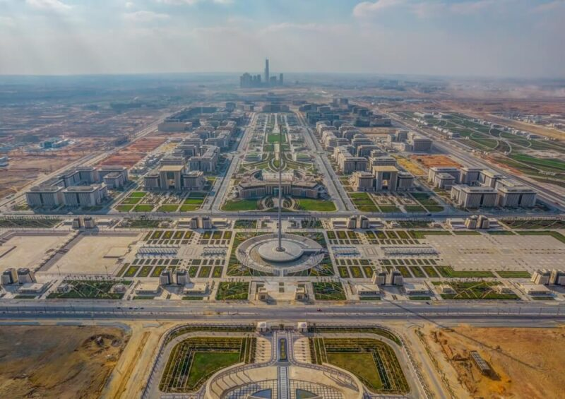
تُعد العاصمة الإدارية الجديدة في مصر مشروعاً قومياً ضخماً، صُممت لتكون مركزاً ذكياً وإدارياً واقتصادياً جديداً يواكب متطلبات المستقبل، ويهدف إلى تخفيف الازدحام عن مدينة القاهرة التاريخية. إليك أبرز ملامح العاصمة الإدارية الجديدة: ## الموقع والمساحة تقع العاصمة الجديدة شرق القاهرة، على حدود مدينة بدر في المنطقة المحصورة بين طريقي القاهرة/السويس والقاهرة/العين السخنة. وتبلغ مساحتها الإجمالية حوالي 170 ألف فدان، وهي مساحة هائلة تعادل مساحة دولة سنغافورة تقريباً. ## أهم المعالم البارزة تضم المدينة مجموعة من الأيقونات المعمارية التي أصبحت علامات مميزة لها: البرج الأيقوني: أطول برج في أفريقيا، ويصل ارتفاعه إلى حوالي 385 متراً. النهر الأخضر: سلسلة طويلة من الحدائق والمساحات الخضراء التي تتوسط المدينة، وتهدف لأن تكون رئة طبيعية تربط الأحياء ببعضها. مسجد الفتاح العليم وكاتدرائية ميلاد المسيح: من أكبر الصروح الدينية في الشرق الأوسط. الحي الحكومي: يضم مقر رئاسة الوزراء والوزارات المختلفة، وقد تم تصميمه بأحدث التقنيات التكنولوجية. ## التكنولوجيا والبنية التحتية تعتمد العاصمة على مفهوم "المدينة الذكية" من خلال: مركز سيطرة وتحكم: لإدارة المرور، الخدمات، والأمن عبر شبكة متطورة من الحساسات والكاميرات. النقل الذكي: تشمل وسائل النقل الحديثة مثل المونوريل (القطار المعلق) والقطار الكهربائي الخفيف (LRT). الطاقة المستدامة: تعتمد بشكل كبير على الطاقة الشمسية وتدوير النفايات. ## الرؤية والهدف الهدف من العاصمة ليس فقط نقل المقرات الحكومية، بل خلق بيئة عمل واستثمار عالمية تجذب رؤوس الأموال، وتوفر جودة حياة مرتفعة للسكان بعيداً عن التلوث والضجيج، مع الحفاظ على معايير الاستدامة البيئية. هل تود معرفة تفاصيل أكثر عن حي معين أو كيفية الوصول إليها؟
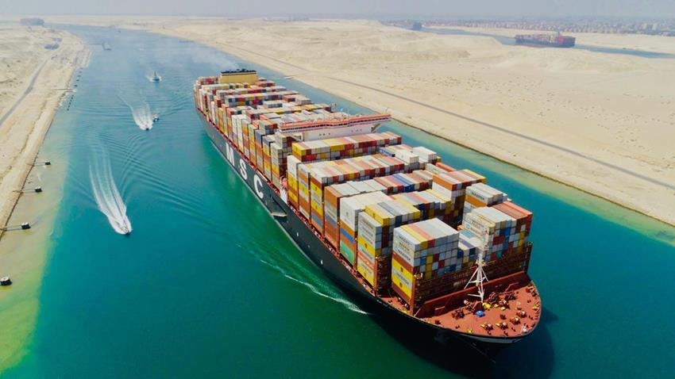
تُعد قناة السويس الشريان الحيوي للتجارة العالمية وأهم ممر مائي اصطناعي في العالم، حيث تربط بين البحرين المتوسط والأحمر، وتعتبر أقصر طريق يربط بين الشرق والغرب. إليك وصف شامل لهذا المرفق الاستراتيجي: ## الأهمية الاستراتيجية والجغرافية تتمتع القناة بموقع فريد يجعلها مركزاً للتحكم في حركة الملاحة الدولية، وتكمن أهميتها في: توفير الوقت والمسافة: توفر القناة ما بين 25% إلى 80% من المسافة مقارنة بطريق رأس الرجاء الصالح. حجم التجارة: يمر عبرها حوالي 12% من حجم التجارة العالمية الإجمالية، و30% من حركة حاويات الشحن في العالم. الربط القاري: هي الخط الفاصل والواصل في آن واحد بين قارتي أفريقيا وآسيا. ## قناة السويس الجديدة (التطوير الأبرز) في عام 2015، افتتحت مصر "قناة السويس الجديدة"، وهي عبارة عن تفريعة موازية للقناة الأصلية بطول 35 كم، بالإضافة إلى تعميق وتوسيع مناطق أخرى، مما أدى إلى: ازدواجية المرور: السماح للسفن بالعبور في الاتجاهين في وقت واحد. تقليل زمن العبور: انخفض زمن عبور السفن من 22 ساعة إلى 11 ساعة فقط. زيادة القدرة الاستيعابية: استيعاب السفن العملاقة (ناقلات النفط والحاويات الضخمة). ## المنطقة الاقتصادية لقناة السويس (SCZONE) لم تعد القناة مجرد ممر مائي، بل تحولت إلى مركز لوجستي وصناعي عالمي يضم: 6 موانئ استراتيجية: مثل ميناء شرق بورسعيد وميناء العين السخنة. مناطق صناعية: تهدف لجذب الاستثمارات في مجالات تجميع السيارات، الإلكترونيات، والبتروكيماويات. تموين السفن: تقديم خدمات الصيانة والوقود والخدمات اللوجستية للسفن العابرة. ## الرؤية المستقبلية تطمح مصر لتحويل منطقة القناة إلى "مركز عالمي للطاقة الخضراء"، خاصة من خلال مشاريع إنتاج الهيدروجين الأخضر والأمونيا الخضراء، لتصبح القناة ممرًا "أخضر" يدعم البيئة العالمية. هل تريد معرفة المزيد عن تاريخ حفر القناة القديمة أم تود التركيز على الفرص الاستثمارية الحالية بها؟
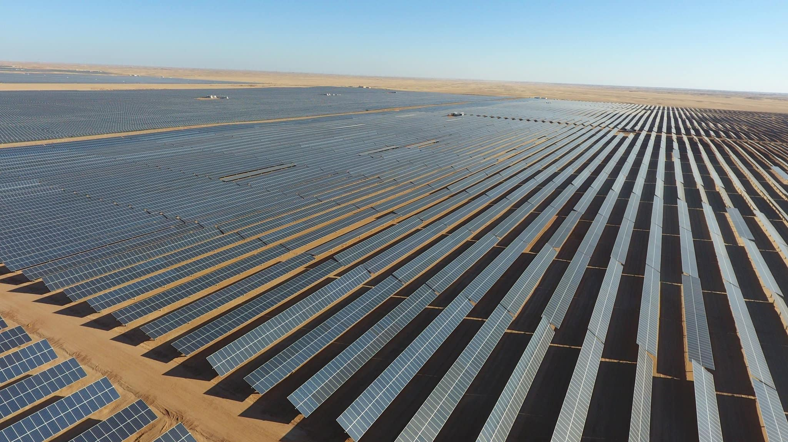
يُعد مجمع بنبان للطاقة الشمسية في محافظة أسوان واحداً من أهم المشروعات القومية في مصر، ويلقب بـ "عاصمة العالم للطاقة الشمسية". هو مشروع عملاق يجسد توجه الدولة نحو الطاقة النظيفة والمستدامة. إليك وصف شامل لهذا المشروع العالمي: ## الموقع والمساحة يقع المشروع في قرية "بنبان" بمحافظة أسوان، وقد تم اختيار هذا الموقع بناءً على تقارير وكالة "ناسا" التي أكدت أنه من أكثر المناطق سطوعاً للشمس في العالم. المساحة: يمتد المشروع على مساحة تصل إلى 37 كيلومتر مربع. الطبيعة الجغرافية: أرض منبسطة تماماً وذات إشعاع شمسي مباشر مرتفع جداً طوال العام. ## الأهمية والقدرة الإنتاجية يعتبر المشروع أضخم محطة طاقة شمسية في مكان واحد على مستوى أفريقيا والشرق الأوسط، ومن الأكبر عالمياً: القدرة الإجمالية: ينتج حوالي 1465 ميجاوات من الكهرباء. المساهمة: يعادل إنتاج المشروع ما يقرب من 90% من الطاقة المولدة من السد العالي، مما يجعله ركيزة أساسية في الشبكة القومية للكهرباء. الاستثمار: تم تنفيذه بنظام الشراكة بين القطاع العام والخاص باستثمارات تجاوزت 2 مليار دولار. ## التأثير البيئي والاستدامة يأتي مشروع بنبان في قلب استراتيجية مصر للطاقة المستدامة 2035، وله فوائد بيئية كبرى: تقليل الانبعاثات: يساهم في خفض انبعاثات الكربون بمقدار 2 مليون طن سنوياً. طاقة نظيفة: يوفر مصدر طاقة لا ينضب وبدون أي ملوثات للجو. جوائز عالمية: حصل المشروع على جائزة "أفضل مشروع حكومي عربي" وجائزة البنك الدولي كأفضل مشروع في العالم من حيث التميز. يُعد مجمع بنبان للطاقة الشمسية في محافظة أسوان واحداً من أهم المشروعات القومية في مصر، ويلقب بـ "عاصمة العالم للطاقة الشمسية". هو مشروع عملاق يجسد توجه الدولة نحو الطاقة النظيفة والمستدامة.إليك وصف شامل لهذا المشروع العالمي:## الموقع والمساحةيقع المشروع في قرية "بنبان" بمحافظة أسوان، وقد تم اختيار هذا الموقع بناءً على تقارير وكالة "ناسا" التي أكدت أنه من أكثر المناطق سطوعاً للشمس في العالم.المساحة: يمتد المشروع على مساحة تصل إلى 37 كيلومتر مربع.الطبيعة الجغرافية: أرض منبسطة تماماً وذات إشعاع شمسي مباشر مرتفع جداً طوال العام.## الأهمية والقدرة الإنتاجيةيعتبر المشروع أضخم محطة طاقة شمسية في مكان واحد على مستوى أفريقيا والشرق الأوسط، ومن الأكبر عالمياً:القدرة الإجمالية: ينتج حوالي 1465 ميجاوات من الكهرباء.المساهمة: يعادل إنتاج المشروع ما يقرب من 90% من الطاقة المولدة من السد العالي، مما يجعله ركيزة أساسية في الشبكة القومية للكهرباء.الاستثمار: تم تنفيذه بنظام الشراكة بين القطاع العام والخاص باستثمارات تجاوزت 2 مليار دولار.## التأثير البيئي والاستدامةيأتي مشروع بنبان في قلب استراتيجية مصر للطاقة المستدامة 2035، وله فوائد بيئية كبرى:تقليل الانبعاثات: يساهم في خفض انبعاثات الكربون بمقدار 2 مليون طن سنوياً.طاقة نظيفة: يوفر مصدر طاقة لا ينضب وبدون أي ملوثات للجو.جوائز عالمية: حصل المشروع على جائزة "أفضل مشروع حكومي عربي" وجائزة البنك الدولي كأفضل مشروع في العالم من حيث التميز.## هيكل المشروع والعمالةالعنصرالتفاصيلعدد المحطاتيضم المجمع 32 محطة شمسية فرعية من قبل شركات مختلفة.عدد الألواحيحتوي على حوالي 7.2 مليون لوح شمسي من أحدث الطرازات.فرص العملوفر المشروع أكثر من 10 آلاف فرصة عمل مباشرة وغير مباشرة أثناء التنفيذ والتشغيل.## لماذا "بنبان" تحديداً؟بصرف النظر عن قوة الشمس، ساهم المشروع في تنمية صعيد مصر بشكل كبير، حيث تحولت المنطقة من صحراء قاحلة إلى مركز جذب للاستثمارات الدولية وخبراء الطاقة من كل أنحاء العالم.
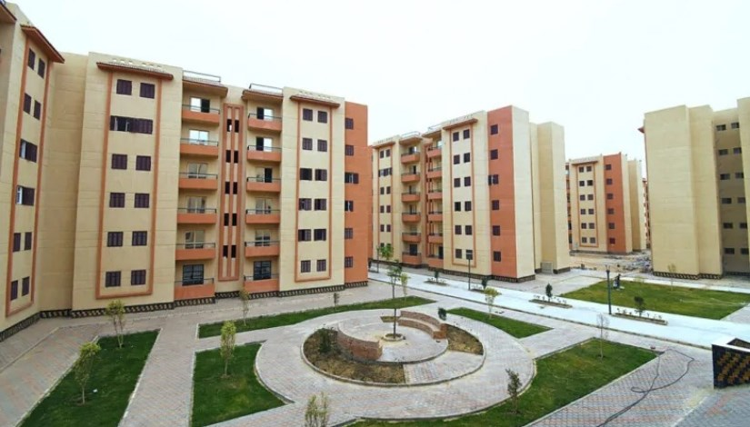
يُعد مشروع الإسكان الاجتماعي (المعروف بمبادرة "سكن لكل المصريين") أحد أكبر مشروعات الإسكان في العالم، ويهدف إلى توفير وحدات سكنية لائقة وكاملة المرافق بأسعار مدعومة، لمساعدة الشباب ومحدودي الدخل على امتلاك مسكنهم الخاص. إليك أهم ملامح هذا المشروع القومي الضخم: ## الفلسفة والهدف يسعى المشروع إلى تحقيق "العدالة الاجتماعية" من خلال نقل المواطنين من المناطق العشوائية أو غير المخططة إلى مجتمعات عمرانية جديدة ومنظمة، مع تقديم دعم مالي مباشر وغير مباشر للمستفيدين. ## مواصفات الوحدات السكنية تتميز وحدات الإسكان الاجتماعي بنموذج موحد يضمن الجودة والكفاءة: التشطيب: يتم تسليم الوحدات كاملة التشطيب (جاهزة للسكن فوراً). المساحة: تتراوح المساحات غالباً ما بين 75 متر مربع (غرفتين وصالة) و 90 متر مربع (3 غرف وصالة). التصميم: يراعي التصميم وجود مساحات خضراء بين العمارات، وتوفير خصوصية كافية للسكان. ## الخدمات والمرافق المشروع ليس مجرد "عمارات سكنية"، بل هو مجتمع متكامل يضم: خدمات تعليمية: مدارس لكافة المراحل التعليمية. خدمات صحية: وحدات صحية ومراكز طبية. خدمات تجارية: أسواق تجارية ومحلات لتلبية الاحتياجات اليومية. خدمات ترفيهية: ملاعب رياضية، مراكز شباب، ومناطق ألعاب للأطفال. بنية تحتية: شبكات مياه، صرف صحي، كهرباء، وغاز طبيعي متطورة. يُعد مشروع الإسكان الاجتماعي (المعروف بمبادرة "سكن لكل المصريين") أحد أكبر مشروعات الإسكان في العالم، ويهدف إلى توفير وحدات سكنية لائقة وكاملة المرافق بأسعار مدعومة، لمساعدة الشباب ومحدودي الدخل على امتلاك مسكنهم الخاص.إليك أهم ملامح هذا المشروع القومي الضخم:## الفلسفة والهدفيسعى المشروع إلى تحقيق "العدالة الاجتماعية" من خلال نقل المواطنين من المناطق العشوائية أو غير المخططة إلى مجتمعات عمرانية جديدة ومنظمة، مع تقديم دعم مالي مباشر وغير مباشر للمستفيدين.## مواصفات الوحدات السكنيةتتميز وحدات الإسكان الاجتماعي بنموذج موحد يضمن الجودة والكفاءة:التشطيب: يتم تسليم الوحدات كاملة التشطيب (جاهزة للسكن فوراً).المساحة: تتراوح المساحات غالباً ما بين 75 متر مربع (غرفتين وصالة) و 90 متر مربع (3 غرف وصالة).التصميم: يراعي التصميم وجود مساحات خضراء بين العمارات، وتوفير خصوصية كافية للسكان.## الخدمات والمرافقالمشروع ليس مجرد "عمارات سكنية"، بل هو مجتمع متكامل يضم:خدمات تعليمية: مدارس لكافة المراحل التعليمية.خدمات صحية: وحدات صحية ومراكز طبية.خدمات تجارية: أسواق تجارية ومحلات لتلبية الاحتياجات اليومية.خدمات ترفيهية: ملاعب رياضية، مراكز شباب، ومناطق ألعاب للأطفال.بنية تحتية: شبكات مياه، صرف صحي، كهرباء، وغاز طبيعي متطورة.## الدعم والتمويلتعتمد الدولة في هذا المشروع على نظام التمويل العقاري لتسهيل السداد:ميزة الدعمالوصفدعم نقديتقدم الدولة مبلغاً مالياً (لا يُرد) يُخصم من ثمن الوحدة الأساسي.فائدة منخفضةيتم التقسيط بفائدة متناقصة بسيطة جداً (3% أو 7% حسب المبادرة).فترات سداد طويلةتصل مدة التقسيط إلى 20 أو 30 عاماً، مما يجعل القسط الشهري قريباً من قيمة الإيجار.## الانتشار الجغرافيلا يقتصر المشروع على القاهرة فقط، بل يمتد ليشمل كافة محافظات مصر والمدن الجديدة مثل:مدينة حدائق أكتوبر وأكتوبر الجديدة.مدينة العبور الجديدة وبدر.العاشر من رمضان.مدن الصعيد الجديدة (المنيا الجديدة، أسيوط الجديدة، قنا الجديدة).## الأثر القوميساهم هذا المشروع في القضاء على ظاهرة العشوائيات، وخلق ملايين فرص العمل في قطاع التشييد والبناء، بالإضافة إلى تشجيع التوسع العمراني بعيداً عن الوادي الضيق والدلتا.هل ترغب في معرفة شروط التقديم الحالية أو الأوراق المطلوبة لحجز وحدة سكنية؟
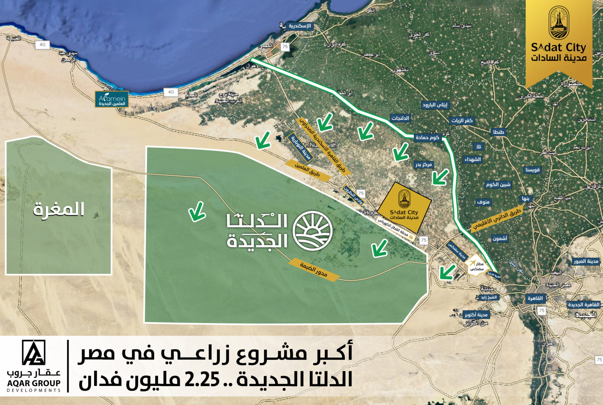
تُعد الدلتا الجديدة واحداً من أضخم المشروعات القومية الزراعية في تاريخ مصر الحديث، وهي بمثابة "مشروع القرن" لتحقيق الأمن الغذائي وتوسيع الرقعة العمرانية بعيداً عن الوادي والدلتا القديمة. إليك وصف تفصيلي لهذا المشروع العملاق لتضعه في موقعك: 1. الموقع والمساحة يمتد المشروع على مساحة إجمالية تزيد عن 2.2 مليون فدان. يقع المشروع على امتداد طريق محور روض الفرج - الضبعة الجديد، مما يجعله قريباً من الموانئ (مثل ميناء الدخيلة والإسكندرية) والمطارات، ويسهل عملية التصدير. 2. المكونات الأساسية للمشروع يضم مشروع الدلتا الجديدة عدة مشروعات فرعية كبرى، أهمها: مشروع مستقبل مصر: وهو باكورة الإنتاج في المنطقة، ويعتمد على أحدث وسائل الري المحوري والزراعة الذكية. مشروع جنة مصر: الذي يساهم في زيادة الإنتاجية الزراعية وتوفير محاصيل استراتيجية. 3. مصادر المياه والبنية التحتية يعتمد المشروع على مصادر مياه متنوعة، أهمها محطة معالجة مياه مصرف بحر البقر و محطة الحمام، والتي تُعد من أكبر محطات معالجة مياه الصرف الزراعي في العالم لإعادة استخدام المياه في الزراعة. يتم إنشاء شبكة ضخمة من الترع والقنوات المبطنة لنقل المياه إلى عمق الصحراء، بالإضافة إلى استخدام المياه الجوفية في بعض المناطق. 4. الأهداف الاستراتيجية الأمن الغذائي: تقليل الفجوة الاستيرادية في المحاصيل الاستراتيجية مثل (القمح، الذرة، والبقوليات). خلق فرص عمل: يوفر المشروع مئات الآلاف من فرص العمل المباشرة وغير المباشرة للشباب والخريجين. التوسع العمراني: إنشاء مجتمعات عمرانية جديدة ومستدامة حول المناطق الزراعية، مما يقلل الكثافة السكانية في الدلتا القديمة. التصنيع الزراعي: لا يقتصر المشروع على الزراعة فقط، بل يهدف لإنشاء مجمعات صناعية لتغليف وتصنيع المنتجات الزراعية لزيادة قيمتها المضافة وتصديرها. 5. الرؤية المستقبلية تمثل الدلتا الجديدة "الجمهورية الجديدة" في القطاع الزراعي، حيث تُستخدم فيها التكنولوجيا الرقمية لمراقبة التربة والري، مما يضمن أقصى إنتاجية بأقل استهلاك للمياه، لتصبح مصر مركزاً إقليمياً لإنتاج وتصدير الغذاء.
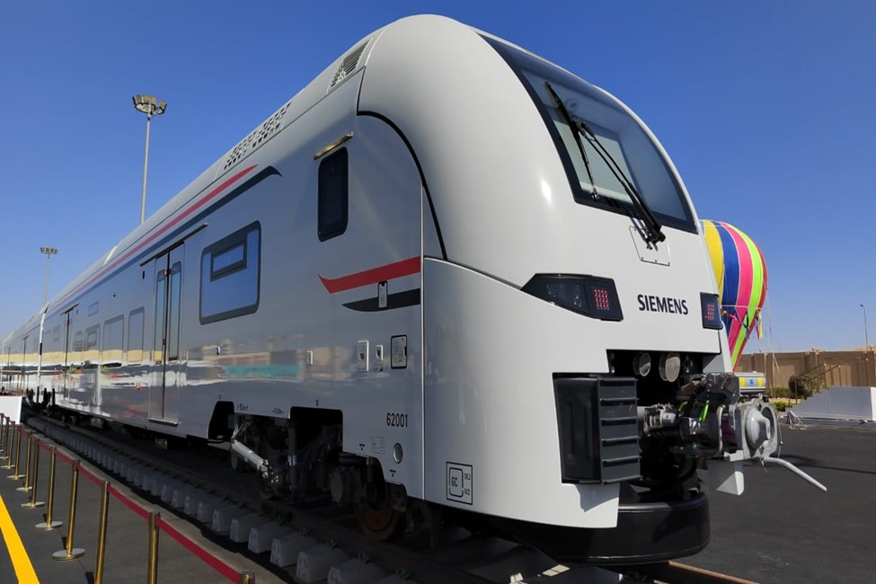
يُعتبر مشروع القطار الكهربائي السريع قفزة نوعية في منظومة النقل والمواصلات في مصر، ويُطلق عليه "قناة سويس جديدة على قضبان"، لأنه يربط بين البحرين الأحمر والمتوسط ويخدم المناطق الصناعية والسياحية والجديدة. إليك أهم المعلومات والتفاصيل حول هذا المشروع لتضيفها في موقعك: 1. الهدف من المشروع الربط الشامل: ربط كافة أنحاء الجمهورية ببعضها البعض (من الشمال إلى الجنوب ومن الشرق إلى الغرب). دعم التنمية: خدمة المدن الجديدة والمناطق الصناعية والسياحية، مما يسهل حركة المواطنين والبضائع. الاستدامة: توفير وسيلة نقل جماعي آمنة، سريعة، وصديقة للبيئة تعمل بالكهرباء لتقليل الانبعاثات الكربونية. 2. شبكة الخطوط الكبرى يتكون المشروع من 4 خطوط رئيسية تغطي معظم أنحاء مصر بطول يصل إلى حوالي 2000 كم: الخط الأول (الأخضر): يمتد من العين السخنة حتى العلمين ومطروح، مروراً بالعاصمة الإدارية والقاهرة والإسكندرية. يُعرف بـ "قناة السويس على قضبان" لربطه بين موانئ البحر الأحمر والمتوسط. الخط الثاني (الأزرق): يمتد من حدائق أكتوبر حتى أبو سمبل في أقصى الجنوب، مروراً بكافة محافظات الصعيد، مما يخلق محوراً للتنمية غرب النيل. الخط الثالث (الأحمر): يربط بين قنا والغردقة وسفاجا، ويهدف بشكل أساسي لخدمة حركة السياحة ونقل البضائع من موانئ البحر الأحمر إلى الصعيد. الخط الرابع: يهدف لربط ميناء بورسعيد بمدينة أبو قير بالإسكندرية (في مراحل التخطيط والتنفيذ). 3. أنواع القطارات والسرعات تضم المنظومة ثلاثة أنواع من القطارات لتلبية احتياجات الجميع: القطار السريع (Velaro): تصل سرعته إلى 250 كم/ساعة (للسفر بين المحافظات البعيدة في وقت قياسي). القطار الإقليمي (Desiro): تصل سرعته إلى 160 كم/ساعة (يتوقف في مراكز ومحافظات أكثر لخدمة ركاب الأقاليم). قطار البضائع: تصل سرعته إلى 120 كم/ساعة (لدعم حركة التجارة والصناعة). 4. الأهمية الاقتصادية والاجتماعية توفير الوقت: سيختصر زمن الرحلة بين القاهرة وأسوان إلى حوالي 4 ساعات فقط. فرص العمل: يوفر المشروع آلاف فرص العمل للمهندسين والفنيين والعمال المصريين أثناء التنفيذ والتشغيل. العالمية: يتم تنفيذ المشروع بالتعاون مع كبرى الشركات العالمية (مثل شركة سيمنز الألمانية)، مما يضمن أعلى معايير الأمان والتكنولوجيا. 5. التكامل مع وسائل النقل الأخرى يرتبط القطار السريع بوسائل النقل الحديثة الأخرى في مصر مثل المونوريل، القطار الكهربائي الخفيف (LRT)، ومترو الأنفاق، مما يخلق شبكة مواصلات متكاملة تسهل حياة المواطن المصري.
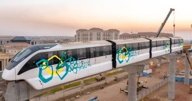
يعتبر مشروع المونوريل (القطار أحادي السكة) أحد أكثر مشروعات النقل تطوراً في مصر، حيث يمثل وسيلة نقل حضارية، ذكية، وصديقة للبيئة، تهدف إلى ربط أطراف القاهرة الكبرى ببعضها وبالمناطق الجديدة في زمن قياسي. إليك أهم التفاصيل لتضمينها في موقعك: 1. ما هو المونوريل؟ هو قطار كهربائي يسير على "سكة واحدة" مرتفعة عن سطح الأرض. يتميز بقدرته على السير في الشوارع الضيقة والمنحنيات الصعبة دون الحاجة لنزع ملكيات أو تعطيل حركة المرور الأرضية. 2. خطوط المونوريل في مصر ينقسم المشروع إلى خطين رئيسيين يربطان شرق القاهرة بغربها: خط مونوريل شرق النيل (العاصمة الإدارية): يربط مدينة نصر بالعاصمة الإدارية الجديدة. يمتد بطول 56.5 كم ويضم 22 محطة. يبدأ من محطة "الاستاد" وينتهي في قلب العاصمة الإدارية، ليخدم أحياء (التجمع، القاهر الجديدة، واللوتس). خط مونوريل غرب النيل (6 أكتوبر): يربط مدينة الجيزة بمدينة 6 أكتوبر. يمتد بطول 42 كم ويضم 13 محطة. يبدأ من محطة "وادي النيل" بالمهندسين ويصل حتى "المنطقة الصناعية" بمدينة أكتوبر، ليخدم أحياء (الشيخ زايد، التوسعات الشمالية، والمناطق الصناعية). 3. مميزات المونوريل السرعة والوقت: تبلغ سرعته القصوى 80 كم/ساعة، مما يقلل زمن الرحلة بشكل كبير مقارنة بالسيارات ووسائل النقل العادية. صديق للبيئة: يعمل بالكهرباء تماماً، مما يقلل من تلوث الهواء والضوضاء داخل المدينة. التكنولوجيا الذكية: القطارات تعمل بنظام آلي (بدون سائق)، ومزودة بأحدث وسائل الأمان والرفاهية مثل التكييف، شاشات العرض، وخدمة الواي فاي. التكامل: يرتبط المونوريل بوسائل النقل الأخرى؛ فيتقاطع مع مترو الأنفاق (الخط الثالث) ومع القطار الكهربائي الخفيف (LRT). 4. الأهمية الاستراتيجية تخفيف الزحام: يساهم في حل أزمة التكدس المروري في المحاور الرئيسية مثل محور 26 يوليو وطريق السويس. التنمية العمرانية: يرفع من قيمة المناطق التي يمر بها ويسهل انتقال الموظفين إلى المقرات الحكومية والشركات في العاصمة الإدارية وأكتوبر.
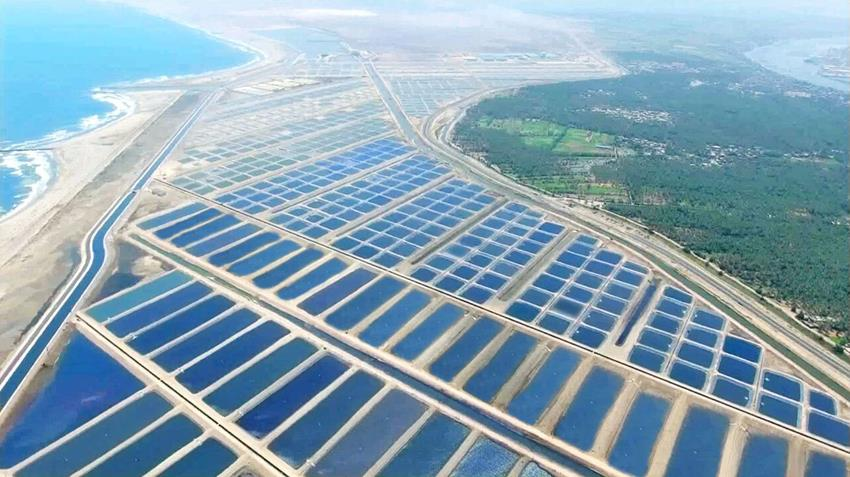
تُعتبر المدينة السمكية ببركة غليون بمحافظة كفر الشيخ فخراً للصناعة المصرية، فهي أكبر مزرعة سمكية متكاملة في الشرق الأوسط وشمال أفريقيا، وتهدف إلى سد الفجوة الغذائية من الأسماك وتوفير منتجات عالية الجودة بأسعار مناسبة. إليك أهم ملامح هذا المشروع العملاق لموقعك: 1. الموقع والمساحة الموقع: تقع في منطقة "بركة غليون" بمركز مطوبس بمحافظة كفر الشيخ، وهي منطقة كانت تشتهر سابقاً بكونها معبراً للهجرة غير الشرعية، فحوّلتها الدولة إلى صرح إنتاجي عالمي. المساحة: تم تنفيذ المشروع على مساحة تزيد عن 4000 فدان في مرحلته الأولى، مع خطط للتوسع المستقبلي. 2. مكونات المشروع المتكاملة ما يميز "غليون" أنها ليست مجرد أحواض سمك، بل مدينة صناعية كاملة تضم: أحواض الاستزراع: تضم مئات الأحواض المخصصة للأسماك البحرية (مثل القاروص والدنيس)، وأحواضاً للأسماك العذبة (مثل البلطي والبوري)، بالإضافة إلى أحواض خاصة بالجمبري. مفرخات عملاقة: لإنتاج زريعة الأسماك والجمبري محلياً بدلاً من استيرادها، لضمان جودة السلالات. مصنع الأعلاف: لإنتاج أعلاف سمكية متطورة وفقاً للمواصفات العالمية. مصنع الثلج وفوم التعبئة: لضمان حفظ وتبريد المنتجات وتجهيزها للنقل. مركز الأبحاث والتدريب: لتطوير سلالات جديدة وتدريب الكوادر البشرية على أحدث طرق الاستزراع السمكي. 3. مصنع التعبئة والتغليف (الأكبر في المنطقة) يحتوي المشروع على مصنع ضخم لإعداد وتجهيز وتعبئة الأسماك والجمبري، حيث يتم تنظيف المنتج وتجميده وتغليفه آلياً، مما يجعله جاهزاً للطرح في الأسواق المحلية أو التصدير للخارج. 4. الأهداف الاستراتيجية للمشروع الأمن الغذائي: زيادة المعروض من البروتين الحيواني (الأسماك) وتقليل الاعتماد على الاستيراد. توفير فرص العمل: وفر المشروع آلاف فرص العمل المباشرة وغير المباشرة لأبناء محافظة كفر الشيخ والمحافظات المجاورة. تحسين الاقتصاد: المساهمة في زيادة الدخل القومي من خلال تصدير الفائض من الأسماك والجمبري بجودة تنافس الأسواق العالمية. تنمية المنطقة: تحويل منطقة حدودية مهملة إلى منطقة جذب سكاني واقتصادي واستثماري. 5. التكنولوجيا المستخدمة يعتمد المشروع على نظام الري والصرف المغلق واستخدام أحدث تكنولوجيات مراقبة جودة المياه وتغذية الأسماك، لضمان إنتاج سمكي صحي تماماً خالٍ من الملوثات.
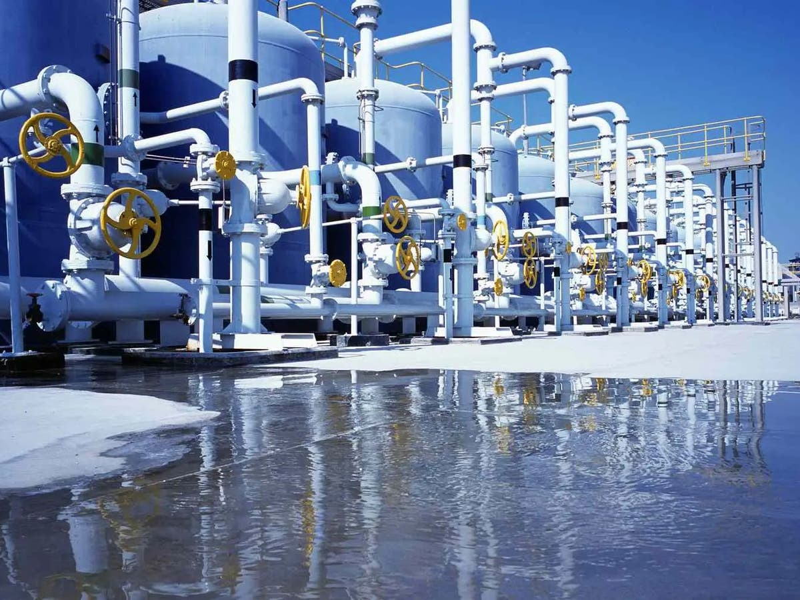
تُعد الخطة القومية لتحلية مياه البحر في مصر واحدة من أكبر الخطط التنموية لمواجهة التحديات المائية، حيث تهدف الدولة إلى تأمين احتياجات مياه الشرب للمدن الساحلية والمناطق العمرانية الجديدة، بعيداً عن حصة مصر التقليدية من مياه النيل. إليك أهم تفاصيل المشروع لتضيفها لموقعك ضمن المشروعات القومية: 1. الهدف الاستراتيجي للمشروع تأمين الموارد المائية: التحول من الاعتماد الكلي على مياه النيل إلى تعظيم الاستفادة من موارد المياه غير التقليدية. دعم المدن الساحلية: توفير مياه الشرب لسكان المدن الساحلية (مثل العلمين، مرسى مطروح، والبحر الأحمر) محلياً لتقليل تكلفة نقل المياه لمسافات طويلة. التنمية العمرانية: دعم توسعات المدن الجديدة (الجيل الرابع) التي تتطلب موارد مائية مستدامة. 2. محطات التحلية العملاقة في مصر تنفذ مصر حالياً "الخطة الخمسية" للتحلية، ومن أبرز محطاتها: محطة "العين السخنة": وتعتبر من أكبر محطات تحلية المياه في العالم، حيث تعمل لخدمة المنطقة الصناعية بالعين السخنة. محطة "العلمين الجديدة": محطة عملاقة تعمل بتكنولوجيا التناضح العكسي (RO) لتغذية مدينة العلمين بالكامل. محطة "الجلالة": تقع بمدينة الجلالة وتخدم المنطقة السياحية والجامعية والسكنية هناك بقدرة إنتاجية ضخمة. محطة "شرق بورسعيد": تهدف لخدمة مشروعات التنمية في منطقة قناة السويس وسيناء. 3. التكنولوجيا المستخدمة تعتمد أغلب المحطات المصرية على تقنية "التناضح العكسي" (Reverse Osmosis)، وهي تقنية متطورة تمر فيها المياه عبر غشاء شبه نفاذ لفصل الأملاح عن المياه العذبة. يتم حالياً العمل على دمج الطاقة المتجددة (مثل الطاقة الشمسية) في تشغيل هذه المحطات لتقليل تكلفة استهلاك الكهرباء وجعل المشروع صديقاً للبيئة. 4. الخطة الطموحة (حتى 2050) تستهدف مصر الوصول إلى إنتاج حوالي 6.4 مليون متر مكعب يومياً بحلول عام 2050 ضمن خطة استراتيجية مقسمة لعدة مراحل. يشارك القطاع الخاص والشركات العالمية والمحلية في تنفيذ هذه الخطة لضمان توطين صناعة التحلية في مصر. 5. الأثر الاقتصادي والبيئي توطين الصناعة: مصر تسعى حالياً لتصنيع مكونات محطات التحلية محلياً بدلاً من استيرادها بالكامل. الزراعة غير التقليدية: تُجرى أبحاث لاستخدام المياه الناتجة عن التحلية في زراعة أنواع معينة من المحاصيل التي تتحمل الملوحة، أو استغلال "المياه المرتجعة" (Brine Water) في مزارع سمكية متخصصة.
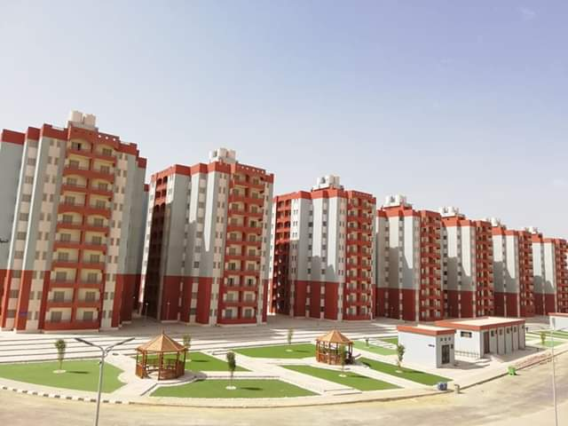
يعتبر مشروع تطوير حي الأسمرات (بمراحله الثلاث) أحد أبرز المشروعات القومية التي تجسد مفهوم "حياة كريمة" وتوفير سكن لائق بدلاً من العشوائيات الخطرة، وهو نموذج يحتذى به في التحول الاجتماعي والعمراني في مصر. إليك أهم التفاصيل لهذا المشروع لتضعها في موقعك: 1. الهدف من المشروع القضاء على العشوائيات: نقل سكان المناطق غير الآمنة والخطرة (مثل منشأة ناصر، عزبة خير الله، واسطبل عنتر) إلى بيئة سكنية حضارية وآمنة. العدالة الاجتماعية: توفير وحدات سكنية مجهزة بالكامل ومفروشة بالأثاث والأجهزة الكهربائية مجاناً للأسر المنقولة. 2. مراحل المشروع ونطاقه يقع المشروع في منطقة المقطم بالقاهرة، وتم تنفيذه على ثلاث مراحل: الأسمرات 1 و 2: يضمان آلاف الوحدات السكنية مع كافة الخدمات الأساسية. الأسمرات 3: وهي المرحلة الأكبر والأكثر تطوراً، حيث تضم وحدات سكنية بنظام الأبراج المتميزة. إجمالي الوحدات في حي الأسمرات يصل إلى حوالي 18,420 وحدة سكنية. 3. الخدمات والمرافق (مدينة متكاملة) حي الأسمرات ليس مجرد وحدات سكنية، بل هو مجتمع متكامل يضم: الجانب الرياضي: ملاعب خماسية، حمامات سباحة، ونوادي اجتماعية لتنمية مواهب الشباب. الجانب التعليمي والصحي: مدارس لجميع المراحل التعليمية، مراكز صحية مجهزة، ووحدات إسعاف. الجانب الاقتصادي: مراكز تدريب مهني، ومشاغل للحرف اليدوية، وأسواق تجارية لتوفير فرص عمل للسكان داخل الحي. الجانب الثقافي: دور سينما مفتوحة، ومسارح، وقصر ثقافة لنشر الوعي والفنون. 4. التحول الاجتماعي والمكاسب بيئة آمنة للأطفال: توفير حدائق ومنتزهات ومساحات خضراء شاسعة تضمن نشأة الأطفال في بيئة صحية بعيداً عن المخاطر. الرقمنة والخدمات: الحي مزود بشبكات غاز طبيعي، وكهرباء، وإنترنت، ومنظومة أمنية وكاميرات مراقبة لضمان الأمان. نموذج عالمي: نال مشروع الأسمرات إشادات دولية كونه تجربة ناجحة في تطوير المناطق العشوائية وتحويلها إلى مناطق جذب حضاري. 5. كلمة ختامية لوصف المشروع "حي الأسمرات.. من قلب المعاناة إلى رقي الحياة؛ صرح بني بسواعد مصرية ليعيد للإنسان كرامته، ويحول العشوائيات إلى مدن تليق بمستقبل مصر 2030."
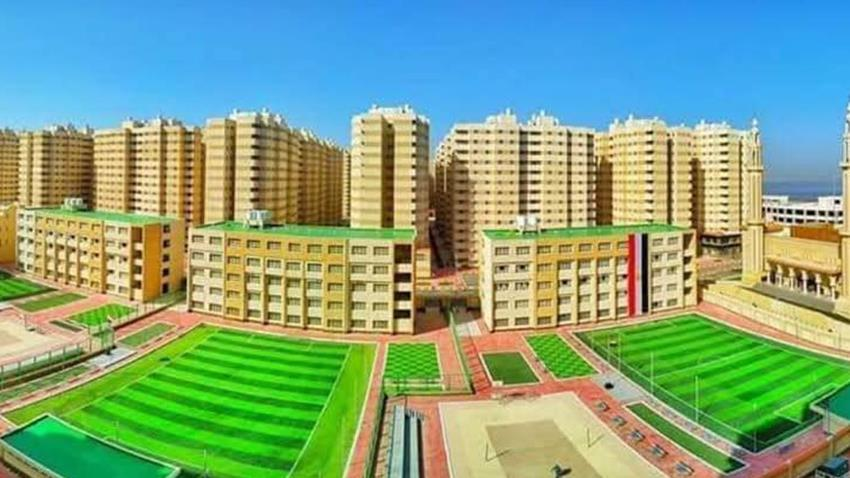
مشروع بشاير الخير بمرامله المختلفة (1، 2، 3، 5) في محافظة الإسكندرية يُعد نقلة نوعية كبرى في ملف تطوير المناطق العشوائية غير الآمنة، حيث حوّل مناطق كانت توصف بالخطورة الشديدة (مثل غيط العنب) إلى مدينة سكنية حضارية متكاملة الأركان. إليك أهم تفاصيل المشروع لإضافتها لموقعك: 1. الموقع والهدف الموقع: يتركز المشروع في منطقة "غيط العنب" والمناطق المحيطة بها بمحافظة الإسكندرية. الهدف: القضاء على العشوائيات الخطرة بالإسكندرية، وتوفير سكن آدمي لآلاف الأسر في مجمعات عمرانية منظمة ومزودة بكافة الخدمات. 2. مراحل المشروع بشاير الخير 1 و 2: ركزتا على توفير آلاف الوحدات السكنية المجهزة بالأثاث والأجهزة الكهربائية، مع إنشاء مولات تجارية ومراكز تدريب مهني. بشاير الخير 3 و 5: تعتبر الأكبر من حيث عدد الوحدات، حيث ضمت عشرات الأبراج السكنية، وتم إنشاء مساجد وكنائس ومدارس ومستشفيات لخدمة السكان. 3. الخدمات والمرافق (أكثر من مجرد سكن) يتميز المشروع بأنه "مجتمع إنتاجي" وليس فقط سكني، حيث يضم: الجانب التعليمي: مدرسة "بشاير الخير" والعديد من المنشآت التعليمية لضمان مستقبل أفضل للأبناء. الجانب الصحي: مستشفيات مجهزة بأحدث الأجهزة لتقديم الرعاية الصحية للسكان مجاناً. الجانب التجاري والمهني: أسواق تجارية (مولات)، ومراكز تدريب مهني لتعليم الشباب الحرف اليدوية والصناعية لمساعدتهم في إيجاد فرص عمل. الجانب الديني والترفيهي: مساجد كبرى، كنائس، ومناطق ترفيهية وملاعب رياضية. 4. التجهيزات الداخلية يتم تسليم الوحدات السكنية مفروشة بالكامل (أثاث، سجاد، ستائر) ومزودة بكافة الأجهزة الكهربائية (ثلاجة، بوتاجاز، غسالة، شاشة تليفزيون)، ليدخل المواطن لمنزله الجديد بملابسه فقط دون تحمل أي أعباء مالية. 5. الأثر الاجتماعي ساهم المشروع في خفض معدلات الجريمة وتحسين مستوى الصحة العامة والتعليم بين سكان تلك المناطق، مما خلق جيلاً جديداً ينشأ في بيئة نظيفة ومنظمة.
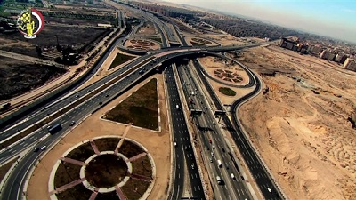
تُعد المشروع القومي للطرق أحد أهم ركائز "الجمهورية الجديدة"، حيث نجحت مصر من خلاله في القفز بمراكز التصنيف العالمي لجودة الطرق من المركز 118 إلى المركز 18 عالمياً، مما جعلها شبكة شرايين تربط المدن ببعضها وتفتح آفاقاً جديدة للاستثمار. إليك أبرز تفاصيل هذا المشروع العملاق لموقعك: 1. الهدف من المشروع الربط والاتصال: ربط كافة محافظات مصر بشبكة طرق حديثة تسهل حركة الانتقال. تقليل الحوادث: إنشاء طرق بمعايير عالمية توفر أعلى مستويات الأمان للمواطنين. النمو الاقتصادي: تسهيل حركة التجارة ونقل البضائع بين الموانئ والمصانع والمدن. خلق محاور تنموية: فتح مناطق جديدة للسكن والاستثمار حول الطرق السريعة لتقليل الزحام في الوادي الضيق. 2. إنجازات بالأرقام تم إنشاء وتطوير أكثر من 7000 كم من الطرق الجديدة. إنشاء مئات الكباري والأنفاق العملاقة لرفع كفاءة التقاطعات وإلغاء التقاطعات السطحية. تنفيذ محاور النيل: إنشاء محاور عرضية ضخمة تربط شرق النيل بغربه بمسافات متقاربة (مثل محور روض الفرج ومحور كلابشة). 3. أبرز الطرق والمحاور الجديدة طريق الجلالة: طريق معجز هندسياً يشق الجبال ليربط العين السخنة بالزعفرانة. محور روض الفرج: الذي يضم "كوبري تحيا مصر" الملجم، وهو الأعرض في العالم ودخل موسوعة جينيس. طريق الصعيد الصحراوي الغربي: الذي تم تطويره ليكون طريقاً حراً بمواصفات عالمية يخدم صعيد مصر. الدائري الإقليمي: أطول طريق دائرى في أفريقيا، يربط كافة المحاور الرئيسية المحيطة بالقاهرة الكبرى دون الدخول إليها. 4. التكنولوجيا والجودة استخدام تقنيات حديثة في الرصف مثل التدوير البارد (CIR) والتدوير الشامل (FDR) لإعادة تدوير طبقات الرصف القديمة وتوفير التكلفة وحماية البيئة. تزويد الطرق بأنظمة النقل الذكية (ITS) التي تشمل كاميرات مراقبة ورادارات متطورة لضمان الالتزام بالسرعات وتأمين الطريق. 5. الأثر على المواطن توفير الوقت والجهد في السفر (رحلات كانت تستغرق 5 ساعات أصبحت تستغرق ساعتين فقط). توفير استهلاك الوقود وتقليل إهلاك السيارات بفضل جودة الرصف. توفير آلاف فرص العمل في شركات المقاولات والتشييد المصرية.
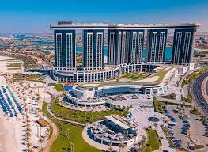
تُعد مدينة العلمين الجديدة أيقونة المدن الساحلية في مصر، وهي ليست مجرد مصيف، بل هي "مدينة جيل رابع" متكاملة تعمل طوال العام، وتعتبر بوابة مصر على البحر المتوسط. إليك أهم المعلومات التي ستحتاجها لوصف هذا المشروع في موقعك: 1. الموقع والمساحة الموقع: تقع في الساحل الشمالي الغربي، وتبدأ حدودها من طريق وادي النطرون وحتى الضبعة. المساحة: تمتد المرحلة الأولى منها على مساحة تقترب من 24 ألف فدان، وهي مصممة لتستوعب أكثر من 3 ملايين نسمة عند اكتمال مراحلها. 2. أهم المعالم والمنشآت تتميز العلمين بمنشآت معمارية عالمية جعلتها تنافس المدن السياحية الكبرى: الأبراج الشاطئية: ناطحات سحاب تصل ارتفاعاتها لأكثر من 170 متراً، تطل مباشرة على البحر. المنطقة الترفيهية: وتضم ممشى سياحي عالمي بطول 14 كم، ومولات تجارية، ومطاعم. المدينة التراثية: تضم مسجداً، كنيسة، مكتبة، دار أوبرا، ومتحفاً، لتعكس الجانب الثقافي والتاريخي للمدينة. المقابر التاريخية: تم الحفاظ على مقابر العلمين (ضحايا الحرب العالمية الثانية) كمزار سياحي وتاريخي هام. 3. الجانب التعليمي والصحي (مدينة ذكية) المدينة ليست للسياحة فقط، بل تضم: جامعات عالمية: مثل (جامعة العلمين الدولية للعلوم والتكنولوجيا) وفرع لجامعة الأكاديمية العربية للعلوم والتكنولوجيا. مجمعات صناعية: في المنطقة الجنوبية للمدينة لجذب الاستثمارات وتوفير فرص عمل. مركز طبي عالمي: يضم مستشفيات تخصصية على أعلى مستوى. 4. أهداف المشروع تغيير خريطة الساحل: تحويل الساحل الشمالي من "قرى موسمية" تعمل لشهرين فقط، إلى مدينة مليونية مستدامة تعمل طوال العام. جذب الاستثمار الأجنبي: توفير فرص استثمارية في قطاعات العقارات، الصناعة، والسياحة. الأمن الغذائي والزراعة: استصلاح الأراضي في المنطقة الخلفية للمدينة ضمن مشروع الدلتا الجديدة.
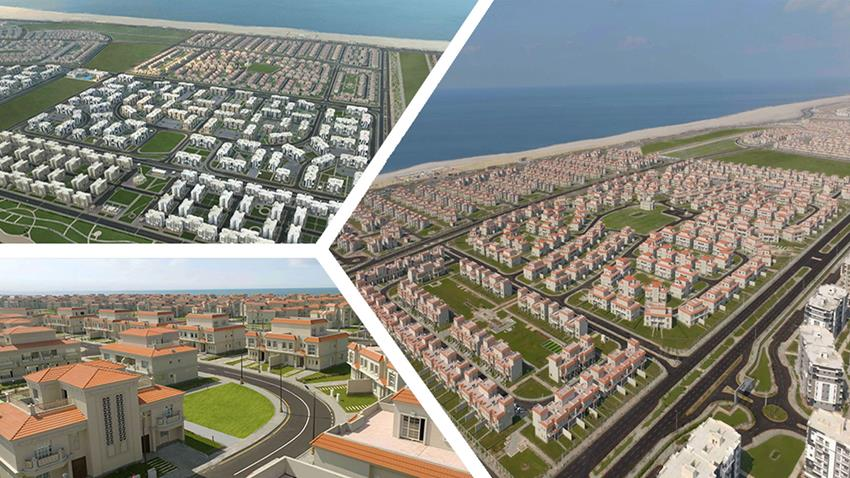
تعتبر مدينة المنصورة الجديدة "درة الدلتا" وواحدة من أجمل مدن الجيل الرابع التي أُنشئت لتكون نافذة سياحية وعمرانية عالمية على ساحل البحر المتوسط في قلب الدلتا. إليك الوصف التفصيلي للمشروع لتضعه في موقعك: 1. الموقع والمساحة الموقع: تقع المدينة في محافظة الدقهلية، وتمتد بطول 15 كم على الطريق الساحلي الدولي، وتتوسط محافظات الدقهلية وكفر الشيخ ودمياط. المساحة: تُقام المدينة على مساحة إجمالية تصل إلى حوالي 7200 فدان، وهي مصممة لتستوعب أكثر من 1.5 مليون نسمة. 2. أهم المعالم والمنشآت المدينة صُممت لتمزج بين الرقي المعماري والخدمات الذكية: الممشى السياحي (الكورنيش): يمتد بطول 15 كم ويضم مسارات للمشاة والدراجات، وكافتيريات، ومناطق ترفيهية، ويعتبر من أجمل المتنزهات الساحلية في مصر. الأبراج السكنية: تضم المدينة أبراجاً سكنية فاخرة تطل مباشرة على البحر، بالإضافة إلى مناطق للفيلات و"سكن مصر" و"جنة"، مما يوفر تنوعاً يناسب كافة فئات المجتمع. جامعة المنصورة الجديدة: صرح تعليمي ضخم يضم كليات في تخصصات حديثة (مثل الذكاء الاصطناعي والهندسة والطب) لتكون مركزاً للإشعاع العلمي. 3. مدينة ذكية ومستدامة الإدارة الرقمية: تعتمد المدينة على أنظمة ذكية في إدارة المرافق والخدمات (الكهرباء، المياه، والإنترنت). الاستدامة: تضم المدينة محطة لتحلية مياه البحر، ومحطة لمعالجة مياه الصرف لاستخدامها في ري المساحات الخضراء الشاسعة والحدائق المركزية. 4. الأهداف الاستراتيجية تخفيف الزحام: توفير بديل عمراني عصري لسكان الدلتا لتقليل التكدس السكاني في المدن القديمة مثل المنصورة. الاستثمار: خلق فرص استثمارية ضخمة في القطاعات العقارية، السياحية، والتعليمية. تنشيط السياحة: وضع الدلتا على خريطة السياحة الشاطئية والترفيهية العالمية بفضل الشواطئ المفتوحة والخدمات الراقية.
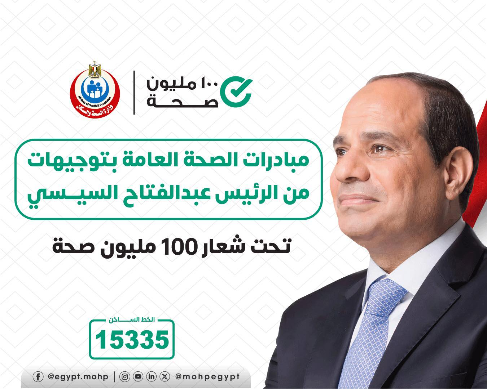
تعتبر مبادرة "100 مليون صحة" واحدة من أنجح وأضخم المبادرات الصحية في تاريخ مصر والعالم، حيث استهدفت فحص وعلاج ملايين المصريين بالمجان، ونالت إشادات دولية واسعة من منظمة الصحة العالمية. إليك الوصف التفصيلي للمبادرة لتضعه في موقعك: 1. الهدف من المبادرة القضاء على فيروس سي: استهدفت المبادرة الكشف المبكر عن المصابين بفيروس الالتهاب الكبدي الوبائي (C) وتقديم العلاج لهم بالمجان، لتصبح مصر أول دولة في العالم تقترب من خلوها تماماً من هذا الفيروس. الأمراض غير السارية: الكشف عن الأمراض المزمنة مثل (الضغط، السكر، والسمنة) والتي تؤثر بشكل كبير على صحة المواطن المصري. 2. نطاق العمل والإنجازات الفحص الشامل: نجحت المبادرة في فحص أكثر من 60 مليون مواطن في وقت قياسي. العلاج بالمجان: توفير أحدث بروتوكولات العلاج العالمية للمصابين في مراكز متخصصة ومنتشرة في كافة محافظات الجمهورية دون أي تكلفة على المواطن. طلاب المدارس: امتدت المبادرة لتشمل فحص طلاب المدارس (الأنيميا، التقزم، والسمنة) لضمان نشأة أجيال صحية. 3. المبادرات الفرعية المنبثقة عنها لم تتوقف عند فيروس سي فقط، بل توسعت لتشمل: صحة المرأة: للكشف المبكر عن أورام الثدي. صحة الجنين: للكشف عن الأمراض التي قد تنتقل من الأم للجنين. إنهاء قوائم الانتظار: لإجراء العمليات الجراحية الحرجة والتدخلات العاجلة بأقصى سرعة. 4. الأثر الاجتماعي والاقتصادي رفع الكفاءة الإنتاجية: بتحسين صحة المواطنين، زادت قدرة القوى العاملة على الإنتاج. توفير المليارات: وفرت الدولة مليارات الجنيهات التي كانت تُنفق مستقبلاً على علاج مضاعفات الأمراض المتأخرة. نموذج عالمي: أصبحت التجربة المصرية في مكافحة فيروس سي نموذجاً يُدرس وتُصدره مصر لخدمة الدول الأفريقية والشقيقة.
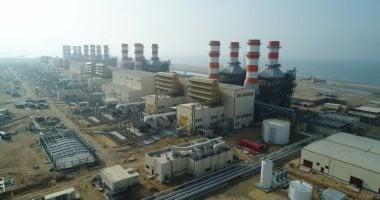
تعتبر محطة كهرباء البرلس بمحافظة كفر الشيخ واحدة من أكبر وأحدث محطات توليد الطاقة في العالم، وهي جزء من الاتفاقية التاريخية التي أبرمتها مصر مع شركة "سيمنز" الألمانية لإنهاء أزمة الانقطاعات الكهربائية وتحويل مصر إلى مركز إقليمي للطاقة. إليك أهم التفاصيل والمعلومات التي يمكنك إضافتها لموقعك: 1. الموقع والمساحة الموقع: تقع في منطقة البرلس بمحافظة كفر الشيخ على ساحل البحر المتوسط، مما يسهل عملية تبريد التوربينات باستخدام مياه البحر. المساحة: أقيمت المحطة على مساحة ضخمة تصل إلى حوالي 250 فداناً. 2. القدرة الإنتاجية والتكنولوجيا القدرة: تبلغ القدرة الإجمالية للمحطة 4800 ميجاوات، وهو رقم ضخم يكفي لتغذية ملايين المنازل والمصانع. التكنولوجيا: تعمل بنظام الدورة المركبة (Combined Cycle)، وهي تكنولوجيا متطورة تتيح توليد الكهرباء مرتين باستخدام نفس كمية الوقود (مرة عن طريق الغاز ومرة عن طريق استغلال الحرارة الناتجة في تشغيل توربينات بخارية)، مما يرفع كفاءة المحطة إلى أكثر من 60% ويقلل استهلاك الوقود. 3. الأهمية الاستراتيجية تحقيق الاكتفاء الذاتي: ساهمت المحطة بشكل أساسي في القضاء على ظاهرة تخفيف الأحمال في مصر وتوفير احتياطي آمن من الكهرباء. دعم الصناعة: توفر الطاقة اللازمة للمشروعات القومية الكبرى القريبة منها مثل (مزرعة غليون السمكية، ومصانع الرمال السوداء). التصدير: تدعم قدرة مصر على الربط الكهربائي مع دول الجوار (مثل الأردن وليبيا والسودان ومستقبلاً أوروبا). 4. الإنجاز القياسي تم تنفيذ المحطة في وقت قياسي عالمي (حوالي سنتين ونصف)، وهو إنجاز هندسي غير مسبوق بالنظر لحجم المحطة وتعقيد التكنولوجيا المستخدمة فيها. شارك في تنفيذها آلاف العمال والمهندسين المصريين تحت إشراف خبراء شركة سيمنز، مما ساهم في نقل الخبرات العالمية للكوادر المصرية.
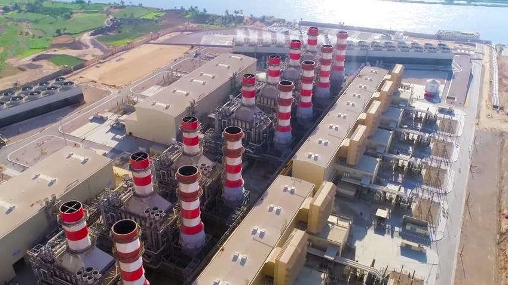
تعتبر محطة كهرباء بني سويف واحدة من أكبر محطات توليد الطاقة في العالم، وهي التوأم لمحطة البرلس ولكن في قلب صعيد مصر. تمثل هذه المحطة نقلة نوعية في تكنولوجيا توليد الطاقة وتأمين احتياجات محافظات الجنوب من الكهرباء. إليك الوصف التفصيلي للمشروع لتضعه في موقعك: 1. الموقع والأهمية الجغرافية الموقع: تقع في قرية "غياضة الشرقية" بمركز ببا بمحافظة بني سويف. الهدف: تم إنشاؤها لخدمة صعيد مصر والمناطق الصناعية الجديدة في منطقة الفيوم وبني سويف والمنيا، وضمان وصول تيار كهربائي مستقر ومستدام للجنوب. 2. القدرة الإنتاجية والتكنولوجيا القدرة: تبلغ القدرة الإجمالية للمحطة 4800 ميجاوات، وهي طاقة هائلة تساهم بشكل كبير في الشبكة القومية للكهرباء. التكنولوجيا: تعمل المحطة بنظام الدورة المركبة (Combined Cycle) باستخدام غاز طبيعي، وتضم 8 توربينات غازية و4 توربينات بخارية، مما يجعلها من أكثر المحطات كفاءة في استهلاك الوقود عالمياً. 3. حقائق وأرقام عن المشروع التنفيذ: تم تنفيذها بالتعاون بين شركة "سيمنز" الألمانية وشركة "أوراسكوم للإنشاءات" المصرية. العمالة: شارك في بنائها آلاف المهندسين والعمال المصريين، مما ساعد في خلق خبرات وطنية في بناء وإدارة محطات الطاقة العملاقة. وقت قياسي: تم الانتهاء من المشروع في وقت قياسي (حوالي 33 شهراً)، وهو ما أبهر الخبراء الدوليين نظراً لضخامة المحطة. 4. الأثر التنموي دعم الاستثمار: ساهمت المحطة في جذب الاستثمارات لمنطقة صعيد مصر، حيث أصبحت الطاقة متوفرة للمصانع والمشروعات الزراعية الجديدة. التنمية المجتمعية: ساهم وجود المحطة في تطوير البنية التحتية للمنطقة المحيطة بها من طرق وخدمات، ووفرت فرص عمل مباشرة وغير مباشرة لأبناء الصعيد.
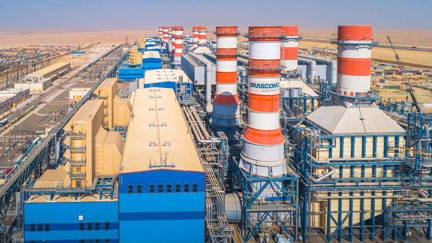
تعتبر محطات كهرباء العاصمة الإدارية الجديدة واحدة من أكبر ثلاث محطات في العالم تم تنفيذها بالتعاون مع شركة "سيمنز" (Siemens)، وهي تمثل العمود الفقري لتأمين احتياجات العاصمة الجديدة والشبكة القومية من الطاقة بأحدث تكنولوجيا عالمية. إليك أهم التفاصيل لوضعها في موقعك: 1. الموقع والمكانة الموقع: تقع في العاصمة الإدارية الجديدة، على طريق "القاهرة - العين السخنة". الأهمية: تم اختيار هذا الموقع الاستراتيجي لتوفير الطاقة للمباني الحكومية، الأحياء السكنية، والمنطقة المركزية للمال والأعمال بالعاصمة. 2. القدرة الإنتاجية الخارقة القدرة: تبلغ القدرة الإجمالية للمحطة 4800 ميجاوات، وهي مماثلة لمحطتي "البرلس" و"بني سويف". الكفاءة: تعد من أكثر محطات العالم كفاءة، حيث تعمل بنظام "الدورة المركبة" الذي يسمح بإنتاج طاقة أكبر بنفس كمية الوقود، مما يقلل الانبعاثات الكربونية ويحافظ على البيئة. 3. مميزات المحطة (تكنولوجيا التبريد بالهواء) ما يميز محطة العاصمة عن محطتي البرلس وبني سويف هو: التبريد بالهواء: نظراً لموقعها الصحراوي بعيداً عن مصادر المياه (البحر أو النيل)، تم استخدام أكبر نظام تبريد بالهواء في العالم باستخدام 12 مراوح عملاقة (Air Cooled Condensers)، بدلاً من التبريد بالمياه، وهو إنجاز هندسي فريد من نوعه. 4. الأثر الاقتصادي والتنموي تأمين العاصمة: تضمن عدم انقطاع التيار الكهربائي نهائياً عن مراكز البيانات الحكومية والمباني السيادية. الربط القومي: المحطة مرتبطة بالشبكة القومية الموحدة بجهد 500 كيلوفولت، مما يساهم في استقرار الكهرباء في مصر بالكامل. فرص العمل: وفرت آلاف فرص العمل أثناء بنائها، وتدار الآن بكوادر مصرية مدربة على أعلى مستوى تقني.